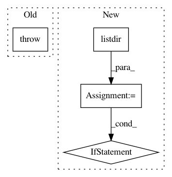

9461c597736ad6ac419a392edeca9221aa53e238,scripts/train.py,Train,_set_timelapse,#Train#,75
Before Change
not self._args.timelapse_output):
return None
if not self._args.timelapse_input_a or not self._args.timelapse_input_b:
raise ValueError("To enable the timelapse, you have to supply "
"all the parameters (--timelapse-input-A and "
"--timelapse-input-B).")
timelapse_output = None
if self._args.timelapse_output is not None:
timelapse_output = str(get_folder(self._args.timelapse_output))
After Change
for folder in (self._args.timelapse_input_a, self._args.timelapse_input_b):
if folder is not None and not os.path.isdir(folder):
raise FaceswapError("The Timelapse path "{}" does not exist".format(folder))
exts = [os.path.splitext(fname)[-1] for fname in os.listdir(folder)]
if not any(ext in _image_extensions for ext in exts):
raise FaceswapError("The Timelapse path "{}" does not contain any valid "
"images".format(folder))
kwargs = {"input_a": self._args.timelapse_input_a,
"input_b": self._args.timelapse_input_b,
"output": timelapse_output}
logger.debug("Timelapse enabled: %s", kwargs)
In pattern: SUPERPATTERN
Frequency: 3
Non-data size: 4
Instances
Project Name: deepfakes/faceswap
Commit Name: 9461c597736ad6ac419a392edeca9221aa53e238
Time: 2020-04-09
Author: 36920800+torzdf@users.noreply.github.com
File Name: scripts/train.py
Class Name: Train
Method Name: _set_timelapse
Project Name: allenai/allennlp
Commit Name: a58eb2cc4ab506f1611c06a308cb6a2ae710707b
Time: 2017-09-26
Author: joelgrus@gmail.com
File Name: allennlp/training/trainer.py
Class Name: Trainer
Method Name: _restore_checkpoint
Project Name: ANTsX/ANTsPy
Commit Name: 8f22750dbdac281232241c20736018c47a7a8e26
Time: 2017-09-07
Author: ncullen.th@dartmouth.edu
File Name: ants/utils/get_ants_data.py
Class Name:
Method Name: get_ants_data